Instrukcja u¿ytkowania aplikacji do odczytu zmiennych ze sterownika PLC.
G³ówne okno programu:
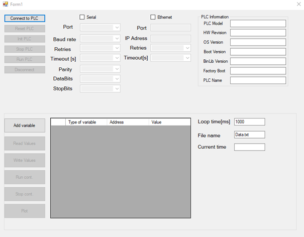
Okno informuj¹ce o koniecznoœci wyboru typu komunikacji (Serial lub Ethernet)
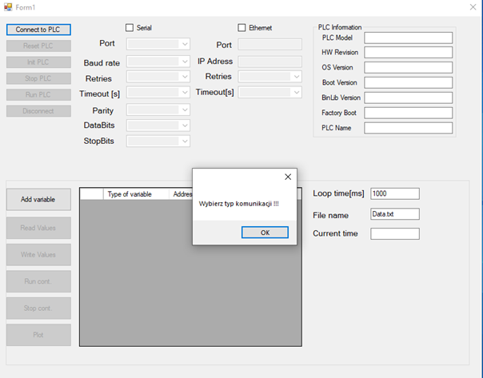
1. Wpisz parametry komunikacji.
Wersja komunikacji szeregowej
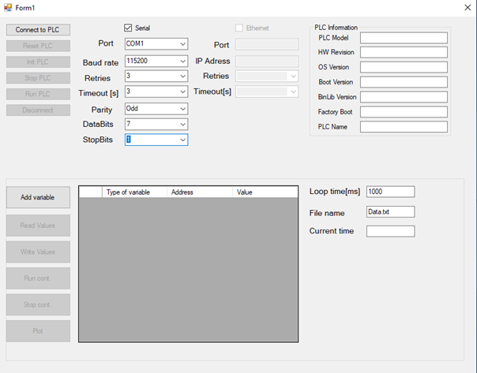
Wersja komunikacji z wykorzystaniem Ethernetu
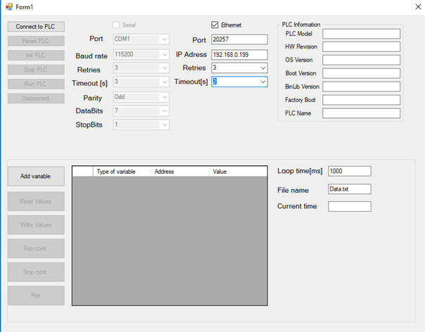
2. Wciœnij Connect to PLC
Po nawi¹zaniu po³¹czenia w prawym rogu poka¿e siê model sterownika i jego podstawowe parametry dotycz¹ce OS.
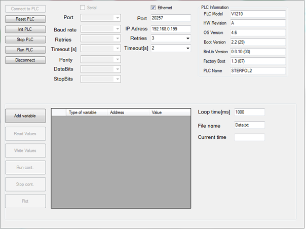
Gdy parametry komunikacji s¹ b³êdne lub jest uszkodzony przewód sygna³owy, pojawia siê komunikat o braku mo¿liwoœci nawi¹zania po³¹czenia ze sterownikiem PLC.
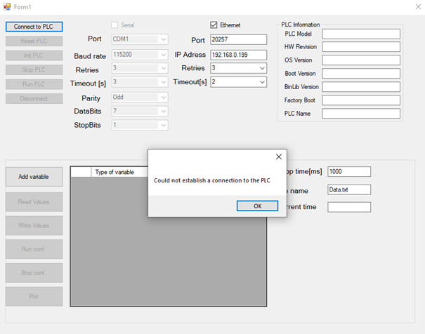
3. Dodawanie zmiennych odbywa siê za pomoc¹ przycisku ADD VARIABLE. Pojawia siê okno z wyborem typu zmiennej (MB,MI,Ml itp.) oraz wpisaniem numeru zmiennej. Wybór zatwierdŸ przyciskiem OK.
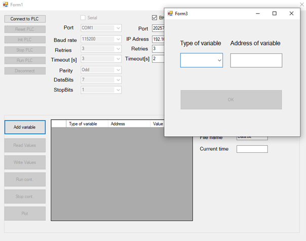
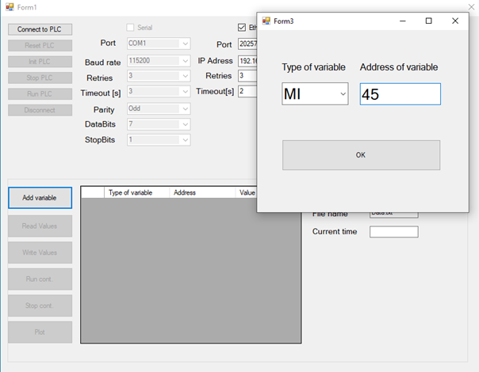
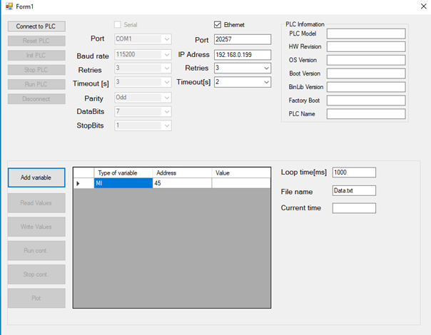
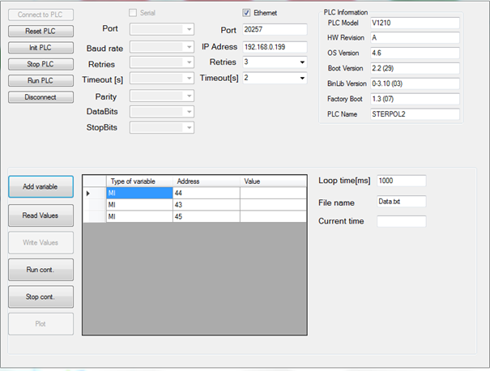
4. Odczyt zmiennych dokonywany jest za pomoc¹ przycisku READ VALUES. W tym czasie sterownik jest odpytywany o wartoœci wszystkich zmiennych znajduj¹cych siê w tabeli. Odczyt danych jest dokonywany 1 raz.
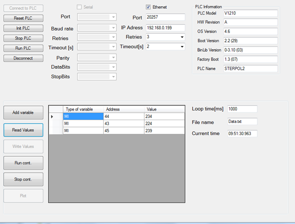
5. Odczyt ci¹g³y danych uruchamia siê za pomoc¹ przycisku RUN CONT. W trybie tym dokonuje siê ci¹g³y odczyt wszystkich zmiennych znajduj¹cych siê w tabeli danych. Interwa³ pomiêdzy odczytami jest zdefiniowany za pomoc¹ pola tekstowego LOOP TIME i jest wyra¿ony w milisekundach. UWAGA!!! Minimalny interwa³ pomiêdzy odczytami waha siê w przedziale 30-50 ms. Wartoœci zmiennych wraz z czasem zapisywane s¹ w pliku tekstowym o nazwie zdefiniowanej w polu tekstowym FILE NAME.
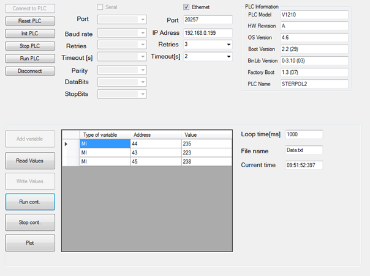
6. Wykres wyœwietlany jest po wciœniêciu przycisku PLOT. Osie X oraz Y s¹ skalowane automatycznie. Legenda generowana jest w sposób automatyczny.
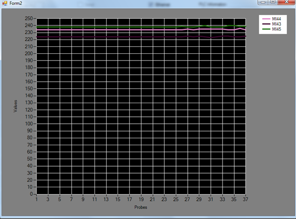
Nadpisanie wartoœci danej zmiennej odbywa siê za pomoc¹ przycisku WRITE VALUES. W tym celu nale¿y wpisaæ w odpowiedniej komórce wartoœæ, zaznaczyæ wiersz, wcisn¹æ przycisk WRITE VALUES.
7. Zatrzymanie odczytu ci¹g³ego oraz zapisu do pliku polega na wciœniêciu przycisku STOP CONT.
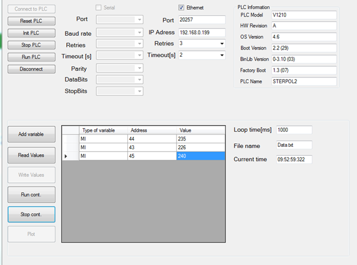